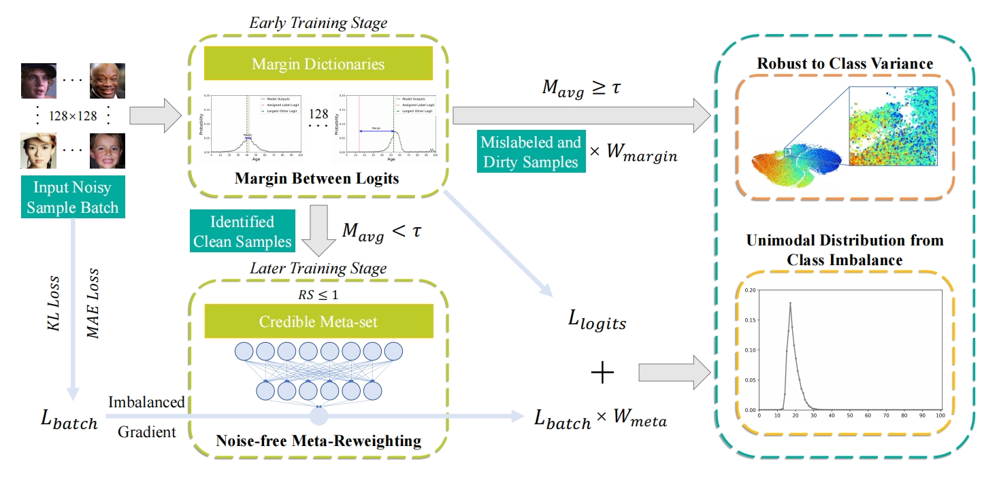
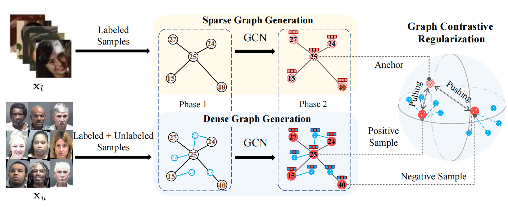
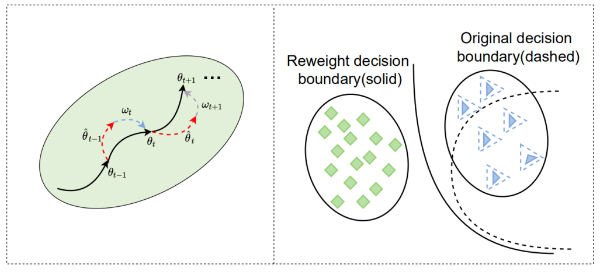
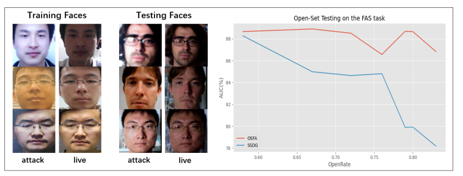
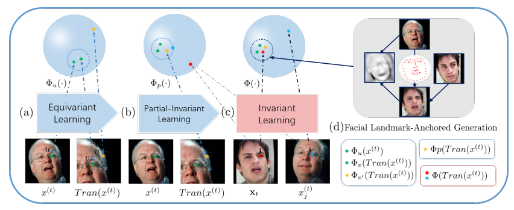
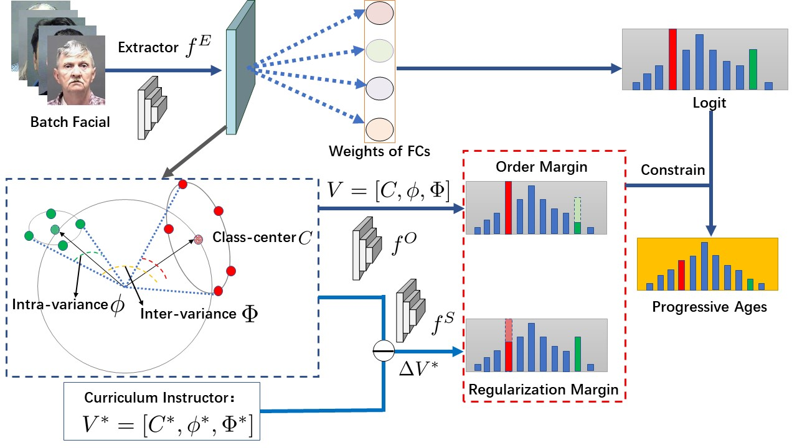
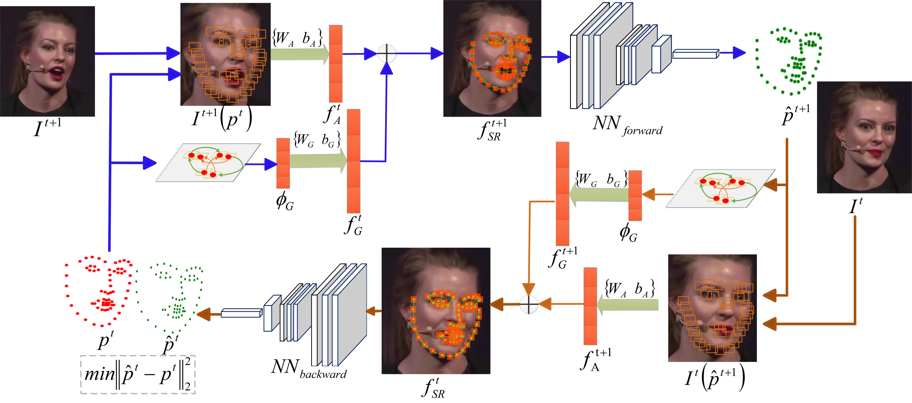

Hao Liu
刘昊
|
Hao Liu, Ph.D, Professor, Vice Dean School of Information Engineering, Ningxia University Research on computer vision and machine learning, particularly facial visual analysis, medical image analysis and deep learning. Ph.D supervised by Prof.Jie Zhou and Prof.Jiwen Lu. Master supervised by Prof.Qingming Huang. Contact Email: liuhao [at] nxu.edu.cn |
Education

Sep. 2014 - Jan. 2018, Ph.D Degree of Control Science and Engineering, Tsinghua University

Sep. 2011 - Jul. 2014, Engineering Master Degree of Computer Technology, University of Chinese Academic of Sciences

Jul. 2007 - Sep. 2011, Bachelor Degree of Software Engineering, Sichuan University
Updates and News
- [2023/09/11] One student paper is accepted to IEEE T-IFS.
- [2023/03/14] Three student papers are accepted to ICME 2023.
- [2023/03/08] One paper on semi-supervised learning is accepted to IEEE T-MM.
- [2021/03/09] One student paper is accepted to ICME 2022.
- [2021/10/30] Best Student Award of ACAIT 2021.
- [2021/07/07] Four student papers are accepted to PRCV 2021.
- [2021/07/04] Two student papers are accepted to ACM MM 2021.
- [2020/07/07] One student paper on facial age estimation is accepted to CVPR 2021.
- [2020/07/07] One student paper on face alignment is accepted to Neurocomputing.
- [2020/06/14] We got Excellent Award (Rank-10) on Face Parsing Challenge.
- [2020/03/30] One student paper on face alignment and tracking is accepted to PR.
- [2020/03/06] Two student papers are accepted to IEEE ICME as Oral presentation.
- [2020/02/02] CAAI Youth Talents Supporting Program [News]
- [2020/01/14] One paper on facial age estimation is accepted to IEEE T-MM.
- [2019/11/11] One paper on face alignment is accepted to AAAI 2020. [News]
- [2019/07/08] CAAI Outstanding Doctoral Dissertation Award （TOP 10）
- [2019/05/01] Two papers on face alignment are accepted to IEEE ICIP 2019.
- [2019/04/24] One paper on face alignment is accepted to IEEE ICME Workshop 2019.
- [2019/03/11] One paper on facial age estimation is accepted to IEEE ICME 2019, Oral [News].
- [2018/08/20] I give a tutorial on IEEE ICPR 2018: Deep Metric Learning for Pattern Recognition.
- [2018/05/15] I give a tutorial on IEEE FG 2018: Representation Learning for Face Alignment and Recognition.
- [2018/12/02] One paper on face alignment is accepted to IEEE T-PAMI [News].
Selected Publications
(* indicates Submitting Author)|  |
Exploiting Unfairness with Meta-set Learning for Chronological Age EstimationChenyang Wang, Zhendong Li, Xian Mo, Xiaofen Tang and Hao Liu* IEEE Transactions on Information Forensics and Security (T-IFS), In Press |
|  |
Siamese Graph Learning for Semi-supervised Age EstimationHao Liu, Mei Ma, Zixian Gao, Zongyong Deng, Fengjun Li and Zhendong Li* IEEE Transactions on Multimedia (T-MM) 2023. |
|  |
Meta Descent Learning for Class Imbalanced Age EstimationWeiwei Cai, Xin Dong and Hao Liu* IEEE International Conference on Multimedia and Expo (ICME 2022). |
|  |
Open Set Face Anti-Spoofing in Unseen AttacksXin Dong, Hao Liu*, Weiwei Cai, Pengyuan Lv, and Zekuan Yu. ACM International Conference on Multimedia (ACM MM 2021). |
|  |
Exploiting Invariance of Mining Facial LandmarksJiangming Shi#, Zixian Gao#, Hao Liu*, Zekuan Yu, and Fengjun Li. ACM International Conference on Multimedia (ACM MM 2021). |
|  | |
|  |
Towards Omni-Supervised Face Alignment for Large Scale Unlabeled VideosCongcong Zhu, Hao Liu*, Zhenhua Yu and Xuehong Sun. AAAI Conference on Artificial Intelligence (AAAI 2020). (Regular Paper) [Arxiv Paper] [Video Presentation] |

|
|
|
|
Two-Stream Transformer Networks for Video-based Face AlignmentHao Liu, Jiwen Lu*, Jianjiang Feng and Jie Zhou. IEEE Transactions on Pattern Analysis and Machine Intelligence (T-PAMI) , 40(11): 2546-2554, 2018. (Regular Paper) [Paper] |

|
Similarity-Aware and Variational Deep Adversarial Learning for Robust Facial Age EstimationHao Liu*, Penghui Sun, Jiaqiang Zhang, Suping Wu, Zhenhua Yu and Xuehong Sun. IEEE Transactions on Multimedia (T-MM), 22(7): 1808-1822, 2020. (Regular Paper) [Paper] |

|
Learning Deep Sharable and Structural Detectors for Face AlignmentHao Liu, Jiwen Lu*, Jianjiang Feng and Jie Zhou. IEEE Transactions on Image Processing (T-IP) , 26(4): 1666-1678, 2017. (Regular Paper) [Paper] |

|
Ordinal Deep Learning for Facial Age EstimationHao Liu, Jiwen Lu*, Jianjiang Feng and Jie Zhou. IEEE Transactions on Circuits and Systems for Video Technology (T-CSVT), 29(2): 486-501, 2019. (Regular Paper) [Paper] |

|
Label-Sensitive Deep Metric Learning for Facial Age EstimationHao Liu, Jiwen Lu*, Jianjiang Feng and Jie Zhou. IEEE Transactions on Information Forensics and Security (T-IFS), 13(2): 292-305, 2018. (Regular Paper) [Paper] |

|
Learning Neighborhood-Reasoning Label Distribution (NRLD) for Facial Age EstimationZongyong Deng, Mo Zhao, Hao Liu*, Zhenhua Yu and Feng Feng. IEEE International Conference on Multimedia and Expo (ICME 2020), Oral Presentation. (Regular Paper) [Paper] |

|
Similarity-Aware Deep Adversarial Learning for Facial Age EstimationPenghui Sun, Hao Liu*, Xing Wang, Zhenhua Yu and Suping Wu. IEEE International Conference on Multimedia and Expo (ICME 2019), Oral Presentation. (Regular Paper) [Paper][Oral Slides][Code] |
Selected Honors and Awards
- Best Student Paper Award of ACAIT, 2021
- The 16th Outstanding Scientific Paper of Ningxia (Rank-1), 2021
- The 15th Outstanding Scientific Paper of Ningxia (Rank-1), 2019
- CAAI Outstanding Doctoral Dissertation Award, 2019
- Excellent Undergraduate Student of Tsinghua University, 2018
- Outstanding Ph.D. Thesis of Tsinghua University, 2018
- National Scholarship of Tsinghua University, 2017
Professional Activities
- CCF Senior Member
- Area Chair, IEEE International Conference on Multimedia and Expo (ICME), 2020.
- Reviewer, IEEE/CVF International Conference on Computer Vision (ICCV), 2021-.
- Reviewer, IEEE/CVF International Conference on Computer Vision and Pattern Recognition (CVPR), 2019-.
- Reviewer, IEEE Transactions on Pattern Analysis and Machine Intelligence (T-PAMI), 2018-.
- Reviewer, IEEE Transactions on Image Processing (T-IP), 2018-.
- Reviewer, IEEE Transactions on Circuits and Systems for Video Technology (T-CSVT), 2018-.
- Reviewer, IEEE Transactions on Information Forensics and Security (T-IFS), 2019.
- Reviewer, IEEE Transactions on Multimedia (T-MM), 2018-.
- Reviewer, AAAI Conference on Artificial Intelligence (AAAI), 2018-.
- Reviewer, IEEE International Conference on Multimedia and Expo (ICME), 2018-.
- Reviewer, IEEE International Conference on Image Processing (ICIP), 2017-.